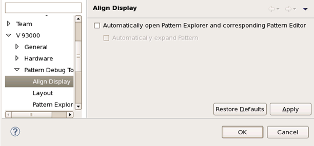

Align Display preference page
The preference page allows you to change the following preferences:
- Automatically open the Pattern Explorer and corresponding Pattern
Editor
specify whether to automatically open the Pattern Explorer and the corresponding Patter Editor when doing Align Display from Error Map and Timing Diagram.
- Automatically expand pattern
specify whether to automatically expand the pattern when doing Align Display from Error Map and Timing Diagram. It is only available when the option Automatically open the Pattern Explorer and corresponding Pattern Editor is enabled.
The following figure displays the Align Display preference page.

Functional changes
- Introduced in SmarTest 7.1.0